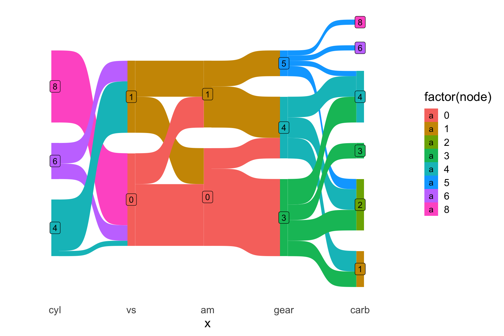
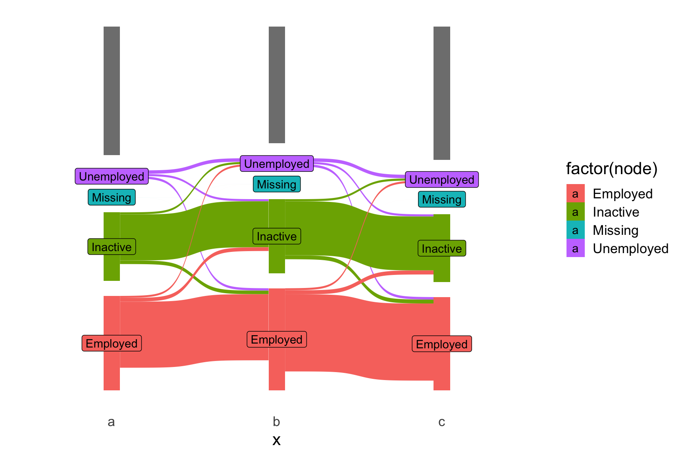
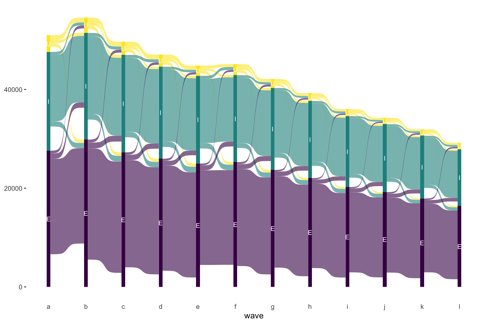
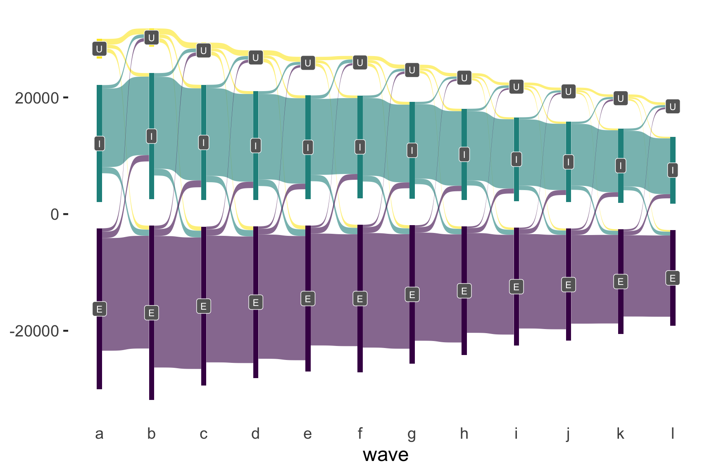

Code
# install.packages("remotes")
# remotes::install_github("davidsjoberg/ggsankey")
library(ggsankey)
library(tidyverse)The aim of this notebook is to use Sankey diagrams to show the flow between economic activity states in the UKHLS. We can maybe do this for just a couple of waves, or for all waves.
First we want to install and load the ggsankey package from david s joberg (?)
See this guide.
# install.packages("remotes")
# remotes::install_github("davidsjoberg/ggsankey")
library(ggsankey)
library(tidyverse)So the example given was a conversion of the mtcars dataset using the make_long function. Let’s look at this before and after conversion.
mtcars mpg cyl disp hp drat wt qsec vs am gear carb
Mazda RX4 21.0 6 160.0 110 3.90 2.620 16.46 0 1 4 4
Mazda RX4 Wag 21.0 6 160.0 110 3.90 2.875 17.02 0 1 4 4
Datsun 710 22.8 4 108.0 93 3.85 2.320 18.61 1 1 4 1
Hornet 4 Drive 21.4 6 258.0 110 3.08 3.215 19.44 1 0 3 1
Hornet Sportabout 18.7 8 360.0 175 3.15 3.440 17.02 0 0 3 2
Valiant 18.1 6 225.0 105 2.76 3.460 20.22 1 0 3 1
Duster 360 14.3 8 360.0 245 3.21 3.570 15.84 0 0 3 4
Merc 240D 24.4 4 146.7 62 3.69 3.190 20.00 1 0 4 2
Merc 230 22.8 4 140.8 95 3.92 3.150 22.90 1 0 4 2
Merc 280 19.2 6 167.6 123 3.92 3.440 18.30 1 0 4 4
Merc 280C 17.8 6 167.6 123 3.92 3.440 18.90 1 0 4 4
Merc 450SE 16.4 8 275.8 180 3.07 4.070 17.40 0 0 3 3
Merc 450SL 17.3 8 275.8 180 3.07 3.730 17.60 0 0 3 3
Merc 450SLC 15.2 8 275.8 180 3.07 3.780 18.00 0 0 3 3
Cadillac Fleetwood 10.4 8 472.0 205 2.93 5.250 17.98 0 0 3 4
Lincoln Continental 10.4 8 460.0 215 3.00 5.424 17.82 0 0 3 4
Chrysler Imperial 14.7 8 440.0 230 3.23 5.345 17.42 0 0 3 4
Fiat 128 32.4 4 78.7 66 4.08 2.200 19.47 1 1 4 1
Honda Civic 30.4 4 75.7 52 4.93 1.615 18.52 1 1 4 2
Toyota Corolla 33.9 4 71.1 65 4.22 1.835 19.90 1 1 4 1
Toyota Corona 21.5 4 120.1 97 3.70 2.465 20.01 1 0 3 1
Dodge Challenger 15.5 8 318.0 150 2.76 3.520 16.87 0 0 3 2
AMC Javelin 15.2 8 304.0 150 3.15 3.435 17.30 0 0 3 2
Camaro Z28 13.3 8 350.0 245 3.73 3.840 15.41 0 0 3 4
Pontiac Firebird 19.2 8 400.0 175 3.08 3.845 17.05 0 0 3 2
Fiat X1-9 27.3 4 79.0 66 4.08 1.935 18.90 1 1 4 1
Porsche 914-2 26.0 4 120.3 91 4.43 2.140 16.70 0 1 5 2
Lotus Europa 30.4 4 95.1 113 3.77 1.513 16.90 1 1 5 2
Ford Pantera L 15.8 8 351.0 264 4.22 3.170 14.50 0 1 5 4
Ferrari Dino 19.7 6 145.0 175 3.62 2.770 15.50 0 1 5 6
Maserati Bora 15.0 8 301.0 335 3.54 3.570 14.60 0 1 5 8
Volvo 142E 21.4 4 121.0 109 4.11 2.780 18.60 1 1 4 2And the variables passed to make_long are cyl, vs, am, gear, carb
mtcars[,c('cyl','vs','am','gear','carb')]?(caption)
cyl vs am gear carb
Mazda RX4 6 0 1 4 4
Mazda RX4 Wag 6 0 1 4 4
Datsun 710 4 1 1 4 1
Hornet 4 Drive 6 1 0 3 1
Hornet Sportabout 8 0 0 3 2
Valiant 6 1 0 3 1
Duster 360 8 0 0 3 4
Merc 240D 4 1 0 4 2
Merc 230 4 1 0 4 2
Merc 280 6 1 0 4 4
Merc 280C 6 1 0 4 4
Merc 450SE 8 0 0 3 3
Merc 450SL 8 0 0 3 3
Merc 450SLC 8 0 0 3 3
Cadillac Fleetwood 8 0 0 3 4
Lincoln Continental 8 0 0 3 4
Chrysler Imperial 8 0 0 3 4
Fiat 128 4 1 1 4 1
Honda Civic 4 1 1 4 2
Toyota Corolla 4 1 1 4 1
Toyota Corona 4 1 0 3 1
Dodge Challenger 8 0 0 3 2
AMC Javelin 8 0 0 3 2
Camaro Z28 8 0 0 3 4
Pontiac Firebird 8 0 0 3 2
Fiat X1-9 4 1 1 4 1
Porsche 914-2 4 0 1 5 2
Lotus Europa 4 1 1 5 2
Ford Pantera L 8 0 1 5 4
Ferrari Dino 6 0 1 5 6
Maserati Bora 8 0 1 5 8
Volvo 142E 4 1 1 4 2These are all numeric, so I guess the ‘node values’.
df <- mtcars %>%
make_long(cyl, vs, am, gear, carb)
df?(caption)
# A tibble: 160 × 4
x node next_x next_node
<fct> <dbl> <fct> <dbl>
1 cyl 6 vs 0
2 vs 0 am 1
3 am 1 gear 4
4 gear 4 carb 4
5 carb 4 <NA> NA
6 cyl 6 vs 0
7 vs 0 am 1
8 am 1 gear 4
9 gear 4 carb 4
10 carb 4 <NA> NA
# ℹ 150 more rowsNow to visualise
ggplot(df, aes(x = x,
next_x = next_x,
node = node,
next_node = next_node,
fill = factor(node),
label = node)) +
geom_sankey() +
geom_sankey_label() +
theme_sankey(base_size = 16)
There are other examples in the guide but I think this is enough to be getting on with with the economic inactivity status data.
library(tidyverse)
library(haven)
library(here)
devtools::load_all(here('R'))
base_dir_location <- "big_data/UKDA-6614-stata/stata/stata13_se/ukhls"
indresp_files <- dir(here(base_dir_location), pattern = "[a-z]_indresp.dta", full.names = TRUE)
varnames <- c(
"jbstat", "dvage", "sex"
)
extract_what <- c(
"labels", "values",
"labels"
)
overall_start_time = Sys.time()
long_slimmed_datalist <- lapply(indresp_files,
read_and_slim_data,
varnames = varnames,
extract_what = extract_what,
verbose = TRUE
)[1] "extracting file: /Users/JonMinton/repos/economic_inactivity/big_data/UKDA-6614-stata/stata/stata13_se/ukhls/a_indresp.dta"
[1] "Attempting to find 3 variables"
[1] "All variables requested found"
[1] "read file in 0.274871110916138 seconds"
[1] "slimming file..."
[1] "extracted 3 variables in 0.0943260192871094 seconds"
[1] "extracting file: /Users/JonMinton/repos/economic_inactivity/big_data/UKDA-6614-stata/stata/stata13_se/ukhls/b_indresp.dta"
[1] "Attempting to find 3 variables"
[1] "All variables requested found"
[1] "read file in 0.353247165679932 seconds"
[1] "slimming file..."
[1] "extracted 3 variables in 0.0940020084381104 seconds"
[1] "extracting file: /Users/JonMinton/repos/economic_inactivity/big_data/UKDA-6614-stata/stata/stata13_se/ukhls/c_indresp.dta"
[1] "Attempting to find 3 variables"
[1] "All variables requested found"
[1] "read file in 0.534571886062622 seconds"
[1] "slimming file..."
[1] "extracted 3 variables in 0.112259864807129 seconds"
[1] "extracting file: /Users/JonMinton/repos/economic_inactivity/big_data/UKDA-6614-stata/stata/stata13_se/ukhls/d_indresp.dta"
[1] "Attempting to find 3 variables"
[1] "All variables requested found"
[1] "read file in 0.381184816360474 seconds"
[1] "slimming file..."
[1] "extracted 3 variables in 0.0889871120452881 seconds"
[1] "extracting file: /Users/JonMinton/repos/economic_inactivity/big_data/UKDA-6614-stata/stata/stata13_se/ukhls/e_indresp.dta"
[1] "Attempting to find 3 variables"
[1] "All variables requested found"
[1] "read file in 0.485878944396973 seconds"
[1] "slimming file..."
[1] "extracted 3 variables in 0.0817351341247559 seconds"
[1] "extracting file: /Users/JonMinton/repos/economic_inactivity/big_data/UKDA-6614-stata/stata/stata13_se/ukhls/f_indresp.dta"
[1] "Attempting to find 3 variables"
[1] "All variables requested found"
[1] "read file in 0.373593807220459 seconds"
[1] "slimming file..."
[1] "extracted 3 variables in 0.141423940658569 seconds"
[1] "extracting file: /Users/JonMinton/repos/economic_inactivity/big_data/UKDA-6614-stata/stata/stata13_se/ukhls/g_indresp.dta"
[1] "Attempting to find 3 variables"
[1] "All variables requested found"
[1] "read file in 0.450233936309814 seconds"
[1] "slimming file..."
[1] "extracted 3 variables in 0.0752949714660645 seconds"
[1] "extracting file: /Users/JonMinton/repos/economic_inactivity/big_data/UKDA-6614-stata/stata/stata13_se/ukhls/h_indresp.dta"
[1] "Attempting to find 3 variables"
[1] "All variables requested found"
[1] "read file in 0.335136890411377 seconds"
[1] "slimming file..."
[1] "extracted 3 variables in 0.0743131637573242 seconds"
[1] "extracting file: /Users/JonMinton/repos/economic_inactivity/big_data/UKDA-6614-stata/stata/stata13_se/ukhls/i_indresp.dta"
[1] "Attempting to find 3 variables"
[1] "All variables requested found"
[1] "read file in 0.43550181388855 seconds"
[1] "slimming file..."
[1] "extracted 3 variables in 0.0769948959350586 seconds"
[1] "extracting file: /Users/JonMinton/repos/economic_inactivity/big_data/UKDA-6614-stata/stata/stata13_se/ukhls/j_indresp.dta"
[1] "Attempting to find 3 variables"
[1] "All variables requested found"
[1] "read file in 0.336649894714355 seconds"
[1] "slimming file..."
[1] "extracted 3 variables in 0.069598913192749 seconds"
[1] "extracting file: /Users/JonMinton/repos/economic_inactivity/big_data/UKDA-6614-stata/stata/stata13_se/ukhls/k_indresp.dta"
[1] "Attempting to find 3 variables"
[1] "All variables requested found"
[1] "read file in 0.408810138702393 seconds"
[1] "slimming file..."
[1] "extracted 3 variables in 0.0636470317840576 seconds"
[1] "extracting file: /Users/JonMinton/repos/economic_inactivity/big_data/UKDA-6614-stata/stata/stata13_se/ukhls/l_indresp.dta"
[1] "Attempting to find 3 variables"
[1] "All variables requested found"
[1] "read file in 0.316988945007324 seconds"
[1] "slimming file..."
[1] "extracted 3 variables in 0.0611128807067871 seconds"long_slimmed_data <- bind_rows(long_slimmed_datalist)
overall_end_time = Sys.time()
print(paste(
"Overall process took",
difftime(overall_end_time, overall_start_time, units = "mins"),
"minutes"
))[1] "Overall process took 0.0973229169845581 minutes"rm(long_slimmed_datalist)
long_slimmed_data# A tibble: 1,516,371 × 4
pidp wave variable value
<dbl> <chr> <chr> <chr>
1 68001367 a sex male
2 68004087 a sex male
3 68006127 a sex female
4 68006135 a sex female
5 68006807 a sex female
6 68007487 a sex female
7 68007491 a sex male
8 68007495 a sex male
9 68007499 a sex male
10 68008167 a sex female
# ℹ 1,516,361 more rowsNow we can filter on variable == jbstat and pivot to wide format (before pivoting back to the weird kind of long used by sankey diagrams…
NOTE: We first want to simplify the categories…
econ_act_groups <- readxl::read_excel(path = here("data/economic_activities_categories.xlsx"), sheet = 'categories') %>%
janitor::clean_names()waves_a_to_c_sankeyfied <-
long_slimmed_data %>%
filter(variable == "jbstat") %>%
left_join(
econ_act_groups %>% select(original, recoded = level_2_meso),
by = c('value' = 'original')
) %>%
mutate(
value = ifelse(!is.na(recoded), recoded, value)
) %>%
select(-recoded, -variable) %>%
pivot_wider(names_from = wave, values_from = value) %>%
ggsankey::make_long(a, b, c)Now to visualise (and hope…)
waves_a_to_c_sankeyfied %>%
ggplot(
aes(
x = x, next_x = next_x,
node = node, next_node = next_node,
fill = factor(node), label = node
)
) +
geom_sankey() +
geom_sankey_label() +
theme_sankey(base_size = 16)
I’ve now looked at the readme of the original package and have some ideas how I might do a bit better.
waves_a_to_l_sankeyfied <-
long_slimmed_data %>%
filter(variable == "jbstat") %>%
left_join(
econ_act_groups %>% select(original, recoded = level_2_meso),
by = c('value' = 'original')
) %>%
mutate(
value = ifelse(!is.na(recoded), recoded, value)
) %>%
select(-recoded, -variable) %>%
mutate(value = case_when(
value == "Employed" ~ 'E',
value == 'Unemployed' ~ 'U',
value == 'Inactive' ~ 'I'
)) %>%
mutate(value = factor(value, levels = c("E", "U", "I"))) %>%
pivot_wider(names_from = wave, values_from = value) %>%
ggsankey::make_long(a, b, c, d, e, f, g, h, i , j, k, l)Going to try the related alluvial flow diagram, and also to change the node states to single letters
waves_a_to_l_sankeyfied %>%
filter(!is.na(node)) %>%
ggplot(
aes(x = x, next_x = next_x, node = node, next_node = next_node,
fill = factor(node), label = node
)
) +
geom_alluvial(flow.alpha = 0.6) +
geom_alluvial_text(size = 3, color = 'white') +
scale_fill_viridis_d() +
theme_alluvial() +
labs (x = 'wave') +
theme(legend.position = 'none') 
waves_a_to_l_sankeyfied %>%
filter(!is.na(node)) %>%
ggplot(
aes(x = x, next_x = next_x, node = node, next_node = next_node,
fill = node, label = node
)
) +
geom_sankey(flow.alpha = 0.6, na.rm = TRUE) +
geom_sankey_label(size = 3, color = 'white', fill = 'gray40') +
scale_fill_viridis_d() +
theme_alluvial(base_size = 18) +
labs (x = 'wave') +
theme(legend.position = 'none') 
I think I want to try out the ggalluvial package, which does similar things to the ggsankey package. But before that I want to change the order of the factors so that the order is Employment, Unemployment, then Inactivity, as unemployment is likely to be more of a transition state between the two.
hmm. it doesn’t look as straightforward as I was expecting to reorder the node levels…
long_waves_as_nums <-
long_slimmed_data %>%
filter(variable == "jbstat") %>%
left_join(
econ_act_groups %>% select(original, recoded = level_2_meso),
by = c('value' = 'original')
) %>%
mutate(
value = ifelse(!is.na(recoded), recoded, value)
) %>%
select(-recoded, -variable) %>%
mutate(wavenum = match(wave, letters[1:26])) %>%
select(pidp, wavenum, status = value) %>%
mutate(next_wavenum = wavenum + 1)
transition_probabilities <- long_waves_as_nums %>%
rename(last_status = status) %>%
left_join(
long_waves_as_nums,
by = c('pidp' = 'pidp', 'next_wavenum' = 'wavenum')
) %>%
select(-wavenum) %>%
select(wavenum = next_wavenum, last_status, status) %>%
group_by(wavenum, last_status, status) %>%
count() %>%
filter(!is.na(status)) %>%
filter(status != "Missing") %>%
filter(last_status != "Missing") %>%
group_by(wavenum, last_status) %>%
mutate(N = sum(n)) %>%
mutate(prop = n / N)
transition_probabilities# A tibble: 99 × 6
# Groups: wavenum, last_status [33]
wavenum last_status status n N prop
<dbl> <chr> <chr> <int> <int> <dbl>
1 2 Employed Employed 19313 20968 0.921
2 2 Employed Inactive 1082 20968 0.0516
3 2 Employed Unemployed 573 20968 0.0273
4 2 Inactive Employed 1053 15106 0.0697
5 2 Inactive Inactive 13446 15106 0.890
6 2 Inactive Unemployed 607 15106 0.0402
7 2 Unemployed Employed 680 2281 0.298
8 2 Unemployed Inactive 603 2281 0.264
9 2 Unemployed Unemployed 998 2281 0.438
10 3 Employed Employed 22536 24303 0.927
# ℹ 89 more rowsI think this is likely more informative. Let’s look at the transition probabilities for wavenum 3 (wave c) and wavenum 10 (wave j)
transition_probabilities %>%
filter(wavenum %in% c(3, 10)) # A tibble: 18 × 6
# Groups: wavenum, last_status [6]
wavenum last_status status n N prop
<dbl> <chr> <chr> <int> <int> <dbl>
1 3 Employed Employed 22536 24303 0.927
2 3 Employed Inactive 1176 24303 0.0484
3 3 Employed Unemployed 591 24303 0.0243
4 3 Inactive Employed 1154 17546 0.0658
5 3 Inactive Inactive 15770 17546 0.899
6 3 Inactive Unemployed 622 17546 0.0354
7 3 Unemployed Employed 714 2324 0.307
8 3 Unemployed Inactive 610 2324 0.262
9 3 Unemployed Unemployed 1000 2324 0.430
10 10 Employed Employed 16184 17283 0.936
11 10 Employed Inactive 843 17283 0.0488
12 10 Employed Unemployed 256 17283 0.0148
13 10 Inactive Employed 741 12456 0.0595
14 10 Inactive Inactive 11360 12456 0.912
15 10 Inactive Unemployed 355 12456 0.0285
16 10 Unemployed Employed 336 1149 0.292
17 10 Unemployed Inactive 355 1149 0.309
18 10 Unemployed Unemployed 458 1149 0.399 Can a mosaic plot be used to represent this?
# devtools::install_github('haleyjeppson/ggmosaic')
# https://cran.r-project.org/web/packages/ggmosaic/readme/README.html
library(ggmosaic)I think actually the vcd::mosaic plot is closer to what I want, even though it’s ‘old school’…
But before that, let’s just show the results in a table :)
transition_probabilities %>%
filter(wavenum == 3) %>%
select(last_status, status, prop) %>%
pivot_wider(names_from = status, values_from = prop)# A tibble: 3 × 5
# Groups: wavenum, last_status [3]
wavenum last_status Employed Inactive Unemployed
<dbl> <chr> <dbl> <dbl> <dbl>
1 3 Employed 0.927 0.0484 0.0243
2 3 Inactive 0.0658 0.899 0.0354
3 3 Unemployed 0.307 0.262 0.430 So, in wave c, someone who has Employed in wave b has a 93% probabiility of being employed in wave c, a 5% probability of being inactive, and a 2% probability of being unemployed.
Someone who is unemployed in wave b has a 31% probability of being employed in wave c, a 26% probability of being inactive, and a 43% probability of remaining unemployed
Someone who is inactive in wave b has a 7% probability of being employed in wave c, a 3% probability of being unemployed, and a 90% probability of remaining inactive.
How does this change by wave 10?
transition_probabilities %>%
filter(wavenum == 10) %>%
select(last_status, status, prop) %>%
pivot_wider(names_from = status, values_from = prop)# A tibble: 3 × 5
# Groups: wavenum, last_status [3]
wavenum last_status Employed Inactive Unemployed
<dbl> <chr> <dbl> <dbl> <dbl>
1 10 Employed 0.936 0.0488 0.0148
2 10 Inactive 0.0595 0.912 0.0285
3 10 Unemployed 0.292 0.309 0.399 Probability from employment to employment 94% (was 93%), to unemployment 1% (was 2%), and to inactive 5% (was 5%)
Probability for unemployment to employment 29% (was 31%), remaining unemployed 40% ( was 43%), and to inactivity 31% (was 26%)
Probability for inactive to employment 6% (was 7%), to unemployed 3% (was 4%) and to remaining inactive 91% (was 90%)
Fundamentally it looks like there’s been no real change in the transition probabilities over time, though if you squint it might look like the stickiness has increased marginally.
I should also calculate conditional probabilities and just present these. These may be more important and interpretable statistics to present.